Check Point SD-WAN with Smart-1 Unified Management: Hands-On Lab Guide
In this virtual lab environment, you get access to two WAN lines. One of them can be used to simulate an MPLS line.
Spoiler Alert: One place to manage it all: SmartConsole.
In this lab, you steer traffic across several WAN links with Check Point software-defined wide area network (SD-WAN). You run the whole deployment from SmartConsole on an on-premises Management Server. No Portal is involved.
What you will learn & how SD-WAN works
What you will learn
- Enable SD-WAN objects on an on-premises Management Server
- Prepare gateway routing so local and overlay traffic fail over cleanly
- Enable the SD-WAN Software Blade and map interfaces to WAN links
- Create the SD-WAN Policy and read its default rules
- Build the VPN and Access Control rules that the overlay needs
- Prove steering works with logs, CPView, and the SD-WAN command line
- Turn one public link into a private MPLS line and watch the tunnel count change
- Fail over a WAN link and watch SD-WAN react
How SD-WAN works in 60 seconds
SD-WAN picks the best WAN link for each connection. It measures link quality (latency, jitter, and packet loss) and applies your SD-WAN Policy. You don't need dynamic routing for this.
Three traffic types matter in this lab:
| Use case | What it does | Lab example |
|---|---|---|
| Local Breakout | Sends Internet traffic out through the best local ISP | hq-client browsing to the Internet |
| Overlay | Picks the best VPN tunnel between SD-WAN peers | hq-client reaching the web server at the branch |
| Backhaul | Sends branch Internet traffic through the headquarters over the VPN | branch-client browsing to a backhauled site (Part 6) |
The management path is simple: the Management Server installs the SD-WAN Policy with the Access Control policy. The SD-WAN process on each gateway then enforces it.
Before you start
Lab access
Your trainer gives you the login details for every lab machine through the lab portal. Keep them there. Don't type them into notes, scripts, or browser password stores, and don't paste them into this guide.
Lab setup
| Component | Gaia version used in this lab |
|---|---|
| Management Server | R82.20 |
| Security Gateway or ClusterXL | R82.20 |
| Spark Firewall (if your topology includes one) | R82.00.11 |
The SD-WAN Policy is a shared Policy and gets installed on Gateways as part of the Access Control policy installation. If a new or modified Access Control install fails on any gateway in the run, the SD-WAN Policy is also not enforced.
Lab values
During the lab, you need additional information based on the topology of this lab: Lab network topology. Hover to trace a connection, and click a device for its addresses.
| Item | Value |
|---|---|
| hq-exl, ISP1 interface | eth2, 10.160.11.10next hop 10.160.11.254 |
| hq-exl, ISP2 interface | eth3, 10.160.12.10next hop 10.160.12.254 |
| branch-gw, ISP1 interface | eth2, 10.160.31.1next hop 10.160.31.254 |
| branch-gw, ISP2 interface | eth3, 10.160.32.1next hop 10.160.32.254 |
| HQ VPN domain | net_192.168.30.0_24 |
| Branch VPN domain | net_172.30.1.0_24 |
| Web server (branch-linux) | 172.30.1.60 |
Part 0Get familiar with the environment
15 min
In this part, you get familiar with the lab environment and deploy the policy packages for the lab.
- Open SmartConsole from the management client
- Open Gateways & Servers and confirm that hq-exl and branch-gw show a healthy status
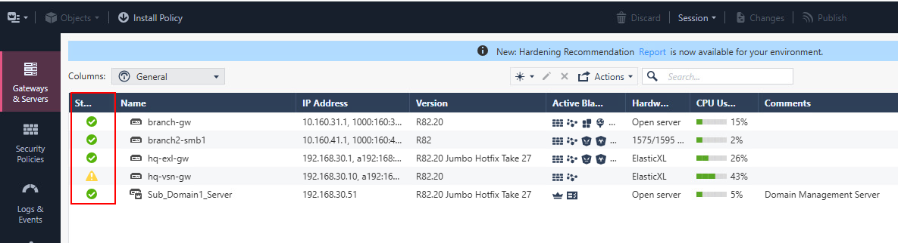
- Open Security Policies and review the Access Control rule base on both gateways' policy packages
The lab cleanup rule accepts all traffic. The data center and branch office policy packages become available after you run the prepared AWX workflow.
Get the policy packages (AWX)
To get the policy packages for this lab:
Open the Firefox browser and click the prepared AWX (Ansible Works) bookmark.
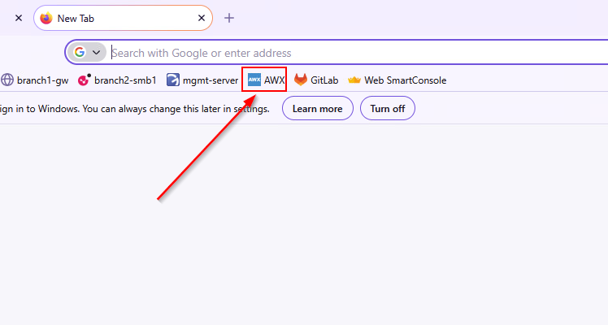
For credentials, see Lab network topology.
Go to Templates and launch "Flow-SD-WAN".
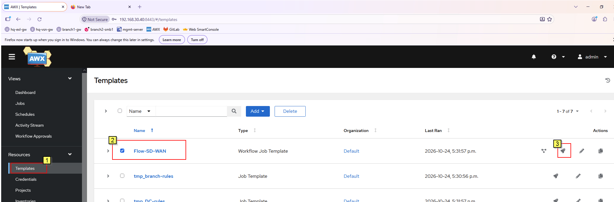
The Ansible scripts are synced from the master repository on GitHub (open GitHub URL) to the GitLab instance installed in this lab environment.
The flow output shows the playbooks used in this flow. tmp is the abbreviation for Template:
tmp_objects: definition of the objects that are used by the community or policy packagestmp_VPN-Community: definition of the VPN Community objecttmp_branch-rules: definition of the rules for the branch office policy packagetmp_DC-Rules: definition of the rules for the data center policy package
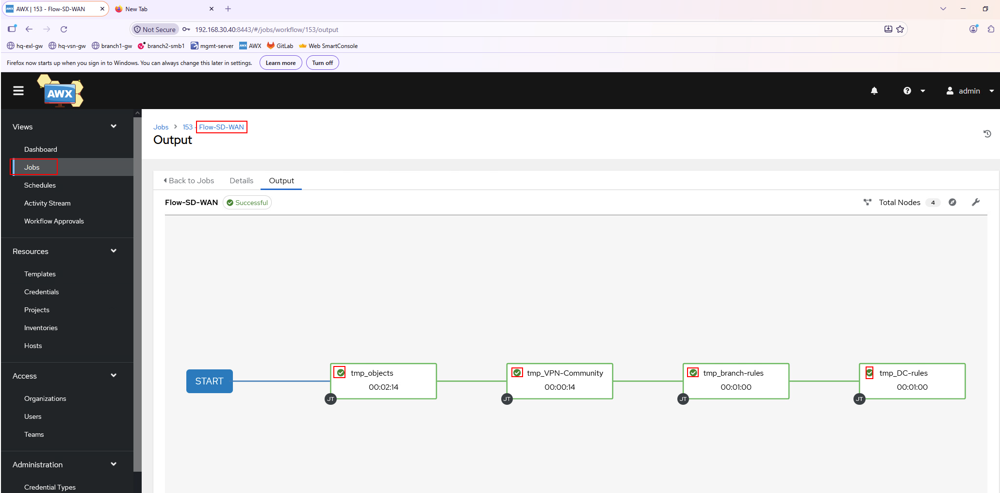
After a successful run of "Flow-SD-WAN", the objects used in this lab are available in SmartConsole.
Please check the policy packages:
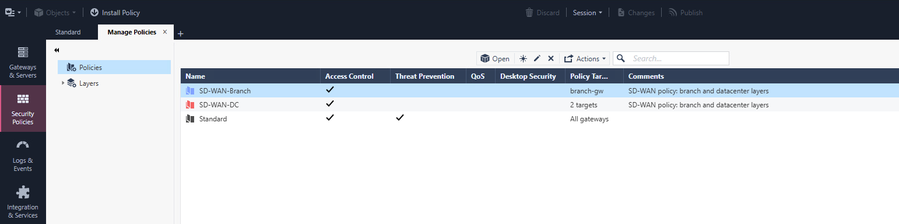
- Open VPN Communities named
Bra_DC_Communityand check or set these settings in the Star community:- On the Gateways page, center has to be hq-exl-gw
- Satellite gateway: branch-gw
- Set the routing based on defined domains (
Domain Based) and set it to "To center and to other satellites through center" - On Access Control Policy > Properties, note whether NAT is disabled inside the community
- On Encryption, note the IKE version
- Check the VPN domains and Link Selection:
- Open hq-exl-gw: set the
VPN domaintonet_192.168.30.0_24 - Open branch-gw: set the
VPN domaintonet_172.30.1.0_24 - In each gateway, open IPSec VPN > Link Selection and note the primary interface
- Open hq-exl-gw: set the
Install and test
Install the SD-WAN-DC and SD-WAN-Branch policy packages and check the traffic from hq-client:
- Browse to an Internet site (https://bbc.com)
- Browse to
http://172.30.1.60(the web server at the branch)
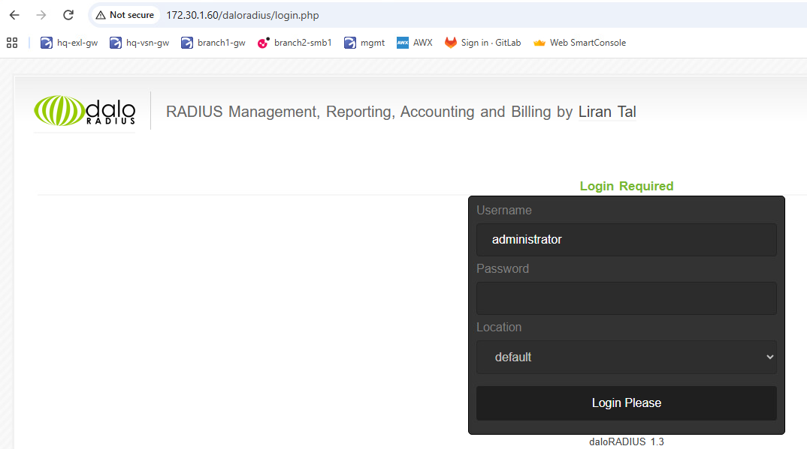
- In Logs & Events, search for
dst:172.30.1.60and confirm you see an Encrypt log
Both sites load, and the Encrypt log shows the VPN path. You should see at least two log entries to 172.30.1.60.
You have a working VPN but no SD-WAN yet.
EA phaseEA Part 0: Enable SD-WAN Blade on the Gateway Objects
This section has been prepared since it will be fulfilled in the GA!
SD-WAN configuration capabilities in EA Phase stay hidden in SmartConsole until you switch them on at the Management Server. Do this before anything else.
- Open an SSH session to the Management Server and log in to Expert mode
- Check the Web SmartConsole package version:
autoupdatercli show web_console -f json | jq -r '[.. | objects | select((."package-installed"|tostring)=="true") | ."package-version"] | "Web SmartConsole version is: \(max)"'- If the version is lower than 176, update the package:
autoupdatercli update_component web_console- Check the current file so you don't add duplicate entries:
cat $FWDIR/conf/mwc.env- Add the two parameters, but only if they aren't already in the file:
echo FF_SD_WAN=1 >> $FWDIR/conf/mwc.env
echo CF_SD_WAN=1 >> $FWDIR/conf/mwc.env- Restart the Web SmartConsole component:
wsc restartRestarting can disconnect active Web SmartConsole sessions.
- Reconnect with SmartConsole
- Go to Security Policies and look in the Shared Policies section
The SD-WAN Policy entry appears under Shared Policies.
Part 1Prepare gateway networking
20 min
SD-WAN builds on the gateway's own routing table. Set that foundation first.
Gateway-originated traffic follows the Gaia routing table, not SD-WAN rules. SD-WAN never changes that table. If ISP1 fails and your default route still points at ISP1, the gateway itself loses its connection even while user traffic fails over.
So each ISP gets its own default route with its own priority. A lower number wins. No priority means priority 0, the highest preference.
Each SD-WAN gateway needs an SD-WAN subscription associated in the User Center and attached to the gateway. Your trainer has already attached the lab licenses. After Part 2, SD-WAN should appear in the list of enabled Software Blades on each gateway.
Next, check the BGP peers and the existing routes.
hq-exl
- Open the Gaia Web portal for hq-exl, or connect over SSH and open Gaia Clish (gclish)
- Review the current routes:
show configuration bgp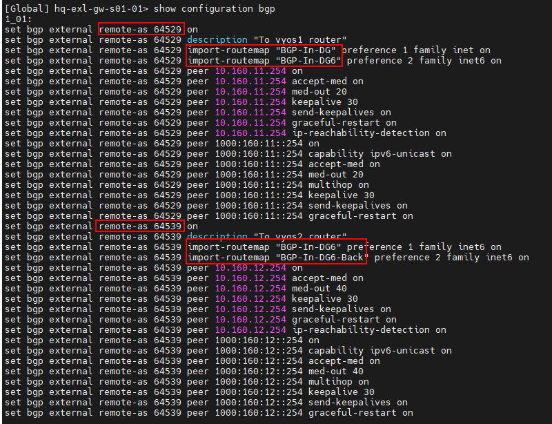
show configuration routemaps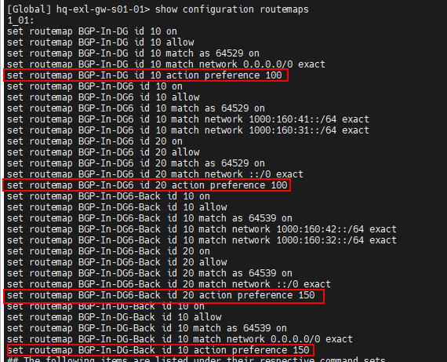
show route all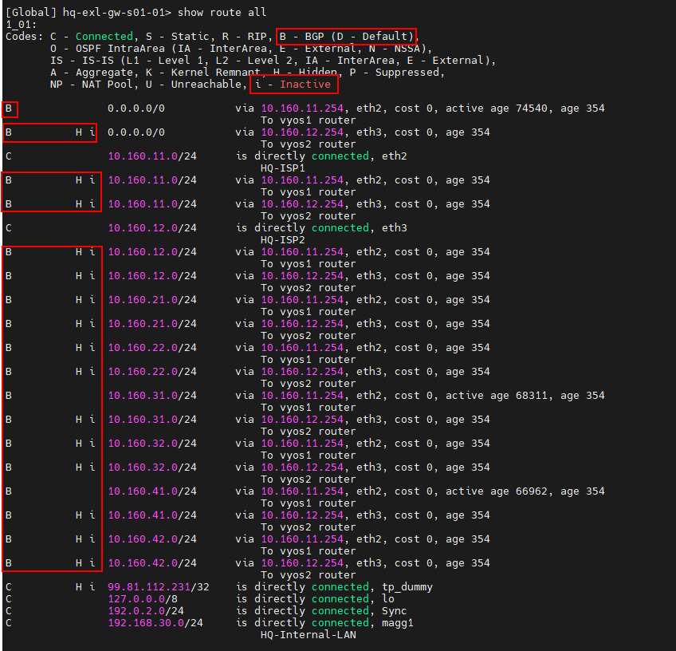
We've defined the preferences to each ISP in the route maps. All routes are advertised by the "ISP" routers, here named VYOS1 and VYOS2.
Add only what is missing:
set bgp external remote-as 64529 peer 10.160.11.254 ip-reachability-detection on
set bgp external remote-as 64539 peer 10.160.12.254 ip-reachability-detection on
save configIn case of static routing, the equivalent command is: set static-route default ping on
If hq-exl runs as a ClusterXL in your topology, repeat this on every cluster member.
show route lists two default routes with different preferences, and both next hops answer.
The Automatic Next Hop feature, which you configure on the interfaces of the Security Gateway object, also uses these routes.
Enable next-hop monitoring, such as ping on, and consider IP Reachability Detection so that a route remains active only when the path is reachable.
- Choose dedicated monitoring target(s) as the number of your ISPs.
- Set static route for each monitoring target to get routed through the monitored ISP only.
- Attach the monitoring targets to the ISP routes.
- Do not attach monitoring targets to the last-resort ISP route (the route with the lowest preference).
branch-gw
- Connect to branch-gw and open Gaia Clish
- Add only what is missing:
set bgp external remote-as 64529 peer 10.160.31.254 ip-reachability-detection on
set bgp external remote-as 64539 peer 10.160.32.254 ip-reachability-detection on
save configPart 2Enable SD-WAN on hq-exl and branch-gw
30 min
2.1 Enable the blade and the interfaces on hq-exl
| Interface | WAN Link | Next hop |
|---|---|---|
eth2 | WAN1 | 10.160.11.254 |
eth3 | WAN2 | 10.160.12.254 |
- Go to Gateways & Servers and open hq-exl
- Select the SD-WAN Software Blade
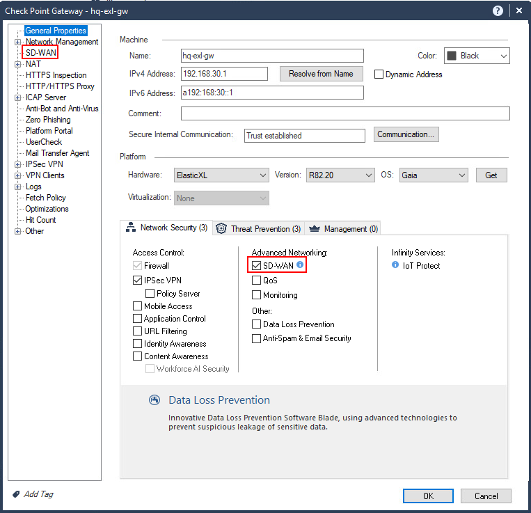
- Open Network Management and confirm that
eth2andeth3use the topology External - Compare the interface names with the names in Gaia
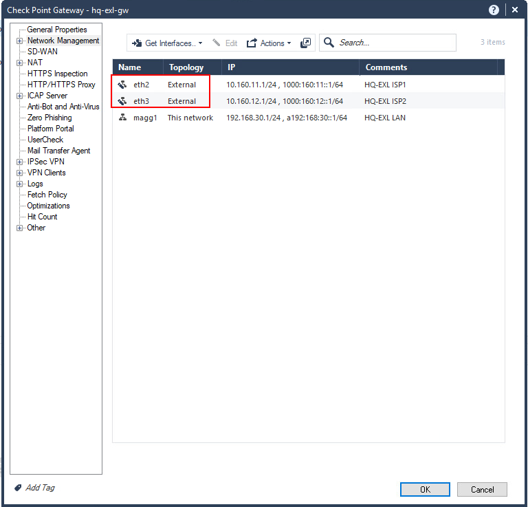
Interface names must match in three places: the Gaia OS, the gateway object's Network Management page, and the installed SD-WAN policy. A mismatch is the most common reason an expected tunnel is missing. In a cluster, the Cluster Virtual Interface names must match the member interface names too.
eth2 → WAN1
- Edit
eth2, then open its SD-WAN menu - Enable SD-WAN on the interface and map it to WAN Link
WAN1
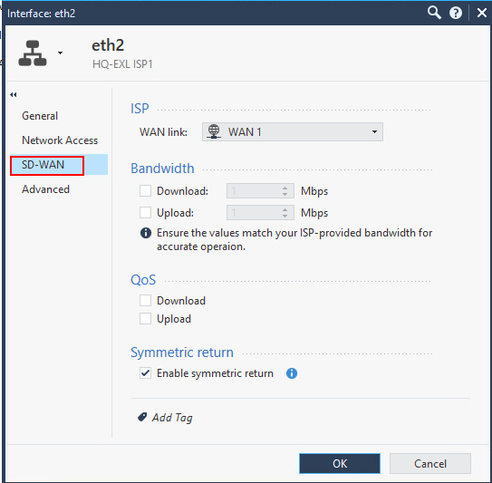
- Go to the
eth2Network Access menu - Set the next hop mode to Custom and enter 10.160.11.254
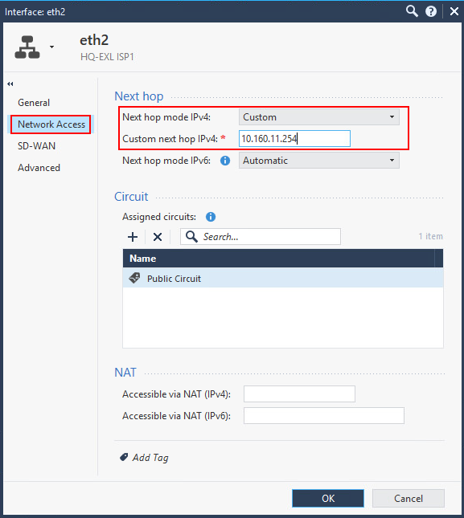
- Click OK
eth3 → WAN2
- Edit
eth3, then open its SD-WAN tab - Enable SD-WAN and map it to WAN Link
WAN2
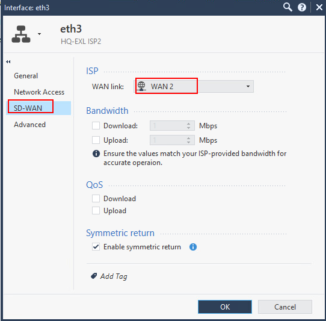
- Go to the
eth3Network Access menu - Set the next hop mode to Custom and enter 10.160.12.254
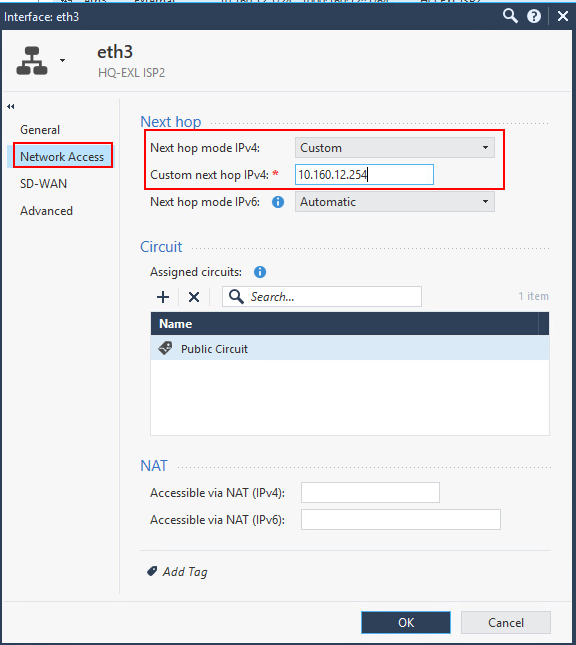
- Leave Symmetric Return at its default
- Click OK
Overview
- Go to the gateway's SD-WAN menu. It shows an overview of the WAN Link mappings, next hops, and circuits per interface.
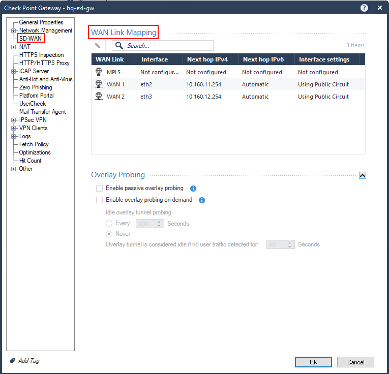
- Click OK
2.2 Repeat on branch-gw
| Interface | WAN Link | Next hop |
|---|---|---|
eth2 | WAN1 | 10.160.31.254 |
eth3 | WAN2 | 10.160.32.254 |
- Open branch-gw and enable the SD-WAN Software Blade
- Enable SD-WAN on
eth2andeth3with the values above - Use a custom next hop IPv4 address
- Publish the session
Automatic Next Hop reads the next hop from the Gaia routing table, which is another reason Part 1 matters. If it can't find a valid route, set the next hop to Custom. If Auto fails and a WAN Link is the only source in a steering object, policy installation can fail.
Both gateways show SD-WAN enabled, and the session is published.
Both Internet links share one circuit. That is why every interface pair forms a tunnel. You change this in Part 7.
2.3 SD-WAN objects
For custom objects, please refer to the SD-WAN documentation.
The two main object types are:
| Object | What it is |
|---|---|
| Circuit | A WAN domain. Overlay tunnels form only between interfaces that share a circuit |
| WAN Link | An SD-WAN object mapped to a gateway interface. Public (Internet) or private (MPLS) |
Part 3Create the SD-WAN Policy
15 min
The SD-WAN Policy is a shared policy. It isn't tied to one policy package.
- Go to Security Policies
- Under Shared Policies, click SD-WAN Policy
- Click Create Policy
- Keep all use cases selected, including Enable SD-WAN Overlay Traffic
- Click Create Policy
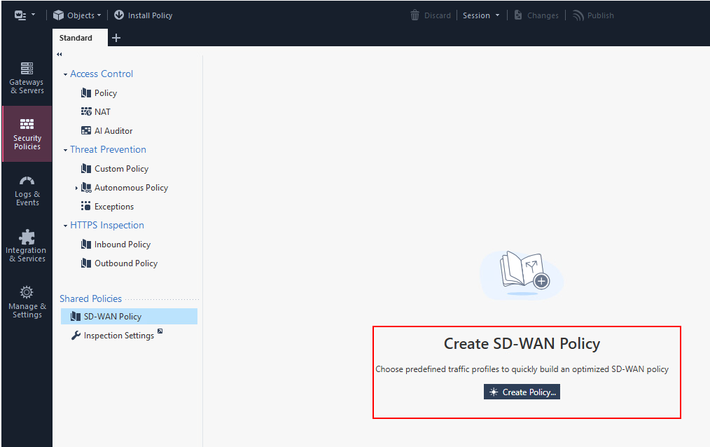
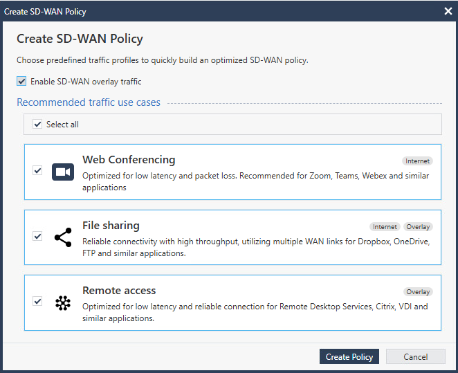
Read the default rules
With all use cases selected, you get:
- Local Breakout rules for Web Conferencing and File Sharing
- Overlay rules for File Sharing and Remote Access
- A default Overlay catch-all rule
- A default Breakout catch-all rule
Look at the columns: Name, Source, Destination, Services & Applications, Steering, Translated Source, Install On. Right-click the column header to reveal QoS and Comment.
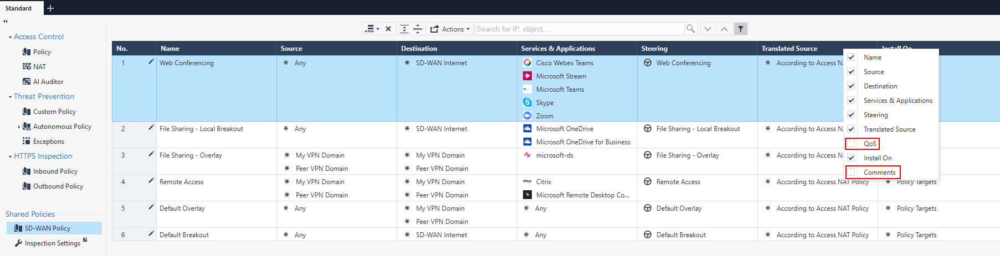
- Which Steering object does the Web Conferencing rule use, and which WAN links does it list as candidates?
- Which Steering object does the default Overlay rule use?
- In the Overlay rules, which objects fill Source and Destination?
AnswerWhat you should see
Internet rules use the SD-WAN Internet object as the destination. Overlay rules use My VPN Domain and Peer VPN Domain. These topology-derived objects follow your VPN domains and routing, so you don't maintain IP ranges by hand. They work only inside the SD-WAN Policy.
Open the Steering objects and review the settings:
| Setting | What it controls |
|---|---|
| Steering candidates | Which WAN links the rule may use (all relevant links, or specific ones) |
| Criteria and thresholds | Latency, jitter, and packet loss limits |
| WAN link utilization | For example, aggregation across all links that meet the thresholds |
| Quality check | How often the gateway tests each link |
Rule order matters: put specific rules above general ones.
Part 4Configure VPN and Access Control for the overlay
25 min
The overlay needs the following settings in the VPN community and the Access Control policy.
4.1 Set the Star community for the overlay
- Go to Security Policies > Access Control > VPN Communities
- Open the Star community
- On the Gateways page, confirm the center and satellites
- Open the routing mode and select To center only or To center and to other satellites through center
- On the MEP page, clear Enable MEP
- Go to Tunnels > Monitoring and clear Set Permanent Tunnels
- Go to Access Control Policy > Properties and select Disable NAT inside the VPN Community
- Click OK
Avoid NAT between the internal networks behind VPN peers. Disabling NAT inside the community is the simplest way.
On a gateway object, don't select Exclude gateway external IP addresses from the VPN Domain. It interrupts overlay probing.
4.2 Review the overlay probing rule
Overlay probing sends Internet Control Message Protocol (ICMP) echo requests between the peers. The probes must be allowed and encrypted.
- Open both Access Control policy packages,
SD-WAN-DCandSD-WAN-Branch. Both contain the same probing rules.
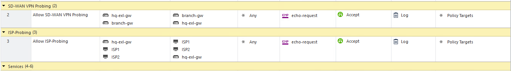
If Global Properties > Firewall > Accept ICMP requests is enabled, the implied rule can match your probes and send them in clear text. Probes must be encrypted. Set the implied rule to Last or Before Last and keep the explicit rule.
OptionalObservability over Skyline
On the hq-linux host, Skyline with a Check Point prepared Grafana dashboard is waiting for gateway data 👍
To allow communication to Prometheus:
- Add rule 2 to the
SD-WAN-DCpolicy package, to allow traffic to Skyline (192.168.30.40, port 8080):
| Source | Destination | Port |
|---|---|---|
any | 192.168.30.40 | http_and_https_proxy |
In this lab, the Prometheus default port 9090 is mapped to 8080.
On each gateway that should send telemetry data to Prometheus, follow these steps:
- Modify the file, or create it if it doesn't exist:
vi /var/tmp/payload.json- Add this content:
{
"enabled": true,
"export-targets": {"add": [
{
"enabled": true,
"type": "prometheus-remote-write",
"url": "http://192.168.30.40:8080/api/v1/write"
}
]}
}- Run this command to apply the configuration:
sklnctl export --set "$(cat /var/tmp/payload.json)"Open http://192.168.30.40:3000 and open the "SD-WAN Observability Dashboard".
Part 5Install and validate
30 min
5.1 Install
- Click Publish
- Click Install Policy
- Select the Access Control policy and both gateways: hq-exl and branch-gw
- Click Install
The SD-WAN Policy installs with the Access Control policy. Watch the task. If it fails, fix the Access Control error first.
- Browse to an Internet site (https://bbc.com)
- Browse to
http://172.30.1.60(the web server at the branch) - In Logs & Events, search for
dst:172.30.1.60and confirm you see an Encrypt log
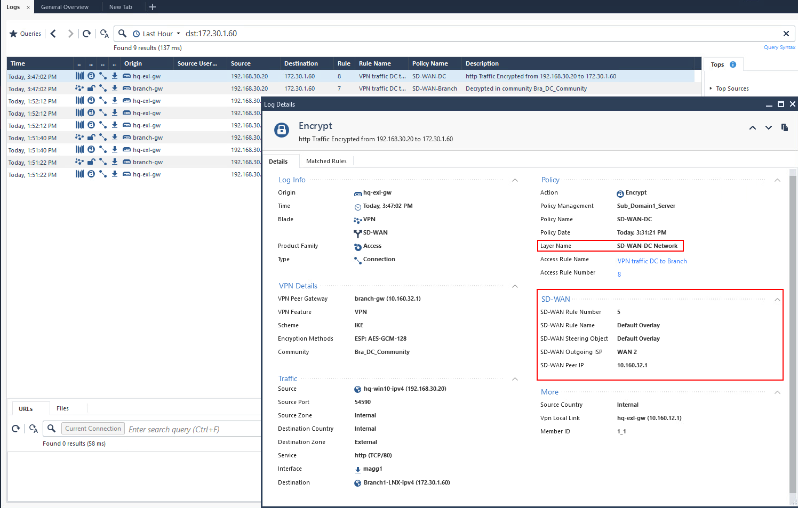
You see a couple of new records that give you more insight into the objects that the lab policy matched.
- Which Steering object was used when you accessed 172.30.1.60?
- Which Steering object was used when you accessed bbc.com?
- What is the name of the policy layer?
- Over which interface did
hq-exl-gwforward the traffic?
Now open the log entry from branch-gw.
- Why don't you see SD-WAN log information here?
CLICheck the SD-WAN information in Expert mode
On hq-exl, log in to Expert mode and run:
sdwan show --status
sdwan show --isps
sdwan show --peers
fw sdwan statCPView shows live telemetry data. For SD-WAN, go to Advanced > SDWAN. See Read probing results in CPView.
The status shows the SD-WAN Policy installed. isps lists your SD-WAN interfaces with their circuit. peers lists branch-gw with its interfaces and circuit. If the peer doesn't appear, check the community membership, the interface names, and the install on both sides.
5.2 Read probing results in CPView
- On hq-exl, run
cpview - Go to Advanced > SDWAN > Probing-IPv4
- Read Local Breakout Probing Results
- Read Overlay Probing Results
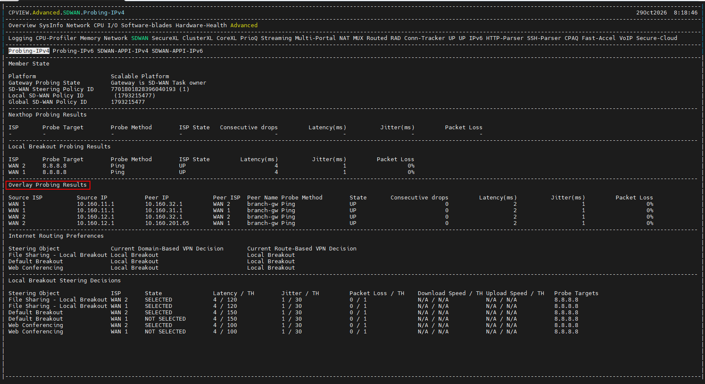
Each Internet link shows a Local Breakout probe in state UP. Overlay Probing Results lists a state per tunnel, with latency, jitter, and packet loss. With two public interfaces on each side and one shared circuit, each gateway shows four tunnels.
5.3 Check the tunnels
In Expert mode:
vpn tu tlistEach tunnel shows From: and To: fields with the SD-WAN interface addresses on both sides. That's how you know SD-WAN built a tunnel per interface pair, and not a classic Link Selection tunnel.
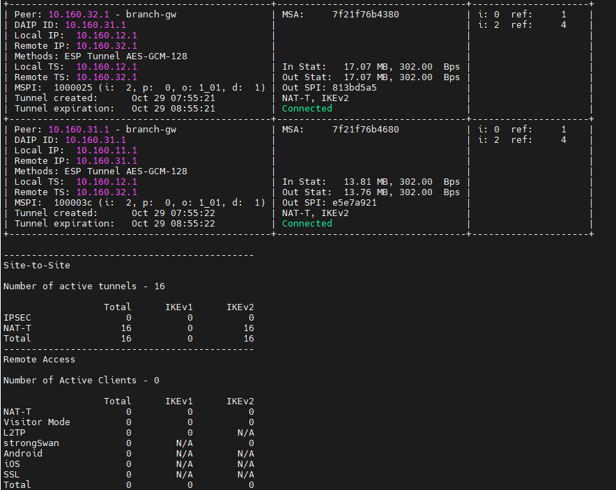
5.4 Test the traffic
On hq-client, open a private browser window:
- Browse to an Internet site (Local Breakout)
- Browse to
http://172.30.1.60(Overlay) - Press
Ctrl+F5a few times to create new connections
On Branch-client, open a private browser window:
- Browse to
http://bbc.com(Local Breakout)
In SmartConsole, open Logs & Events:
- Search for
dst:bbc.comand open the session log - Open the Connections tab and open a connection log from the firewall blade
The SD-WAN section shows the Local Breakout rule and the ISP used.
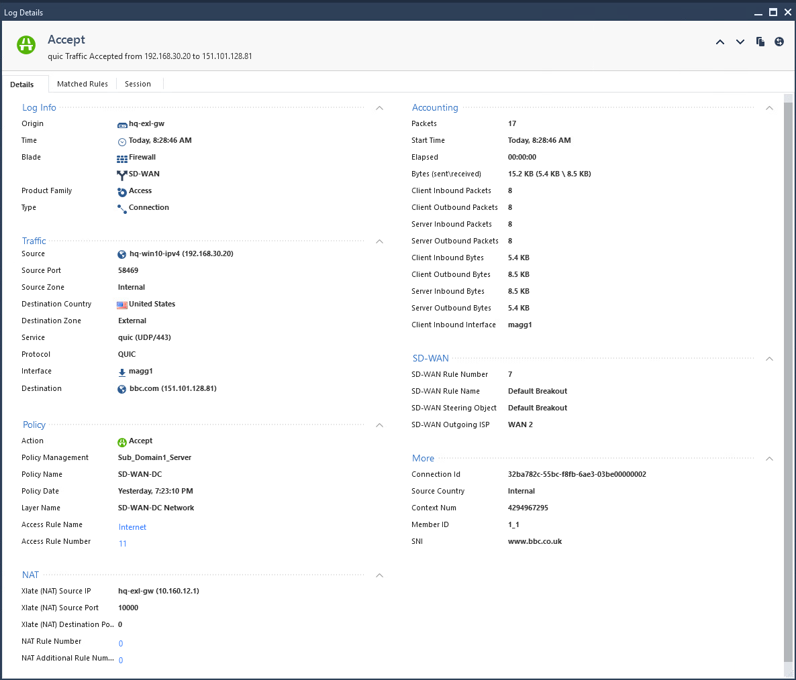
Part 6Backhaul verification
20 min
Send the branch's Internet traffic through headquarters over the overlay.
Backhaul needs the headquarters gateway to act as the center of the Star community, and the VPN routing option "To center, or through the center to other satellites, to Internet and other VPN targets".
The following rule is prepared in the lab as an example of how to steer client traffic to a specific site through the backhaul.
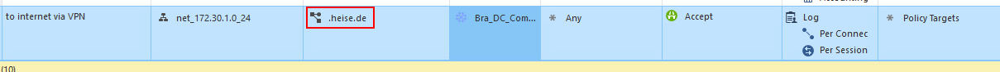
- Open the branch network object, go to NAT, select Add automatic address translation rules, then Hide behind gateway, and set Install On to All
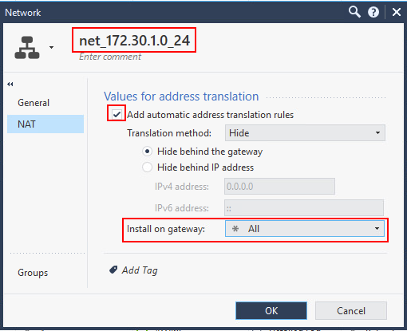
- Keep Disable NAT selected in the community, so the traffic translates only when it leaves the center
- Publish and install on both gateways
- Add a rule above the Backhaul rule, with the branch gateway object as source and Local Breakout Only steering, if you want the gateway's own Internet traffic to leave locally
Test
On Branch-client, open a private browser window:
- Browse to
http://heise.de(Backhaul) - Wait for the page to load completely
- Verify that the traffic is being backhauled through the headquarters gateway
- Search for the logs that are related to
dst:heise.deand open the latest Encrypt log - Find the SD-WAN section in the log card
The log shows the SD-WAN rule that matched, the Steering object, and which interface carried the encrypted traffic.
- Note which rule matched the traffic and which interface carried it
- Open the steering object that matched the rule
Create a new steering object that matches the traffic pattern and specifies the preferred interface for the backhaul traffic.
Apply the changes and verify that the new steering object is used for subsequent traffic.
Part 7Change tunnel peering by using circuits
30 min
Now you turn the second link into a private line. In the lab, a router between the gateways simulates MPLS (Multiprotocol Label Switching). The gateways now see a private next hop on eth3.
SD-WAN builds tunnels only between interfaces on the same circuit. Giving the private line its own circuit changes the tunnel count. That's the lesson.
7.1 Create the MPLS WAN Link and circuit
- In SmartConsole, create a new Circuit for the private line
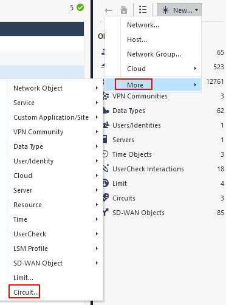
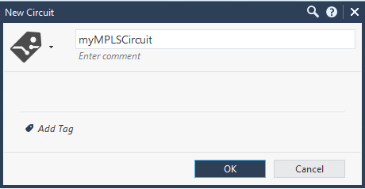
- Create a WAN Link named
MPLSand set its type to Private
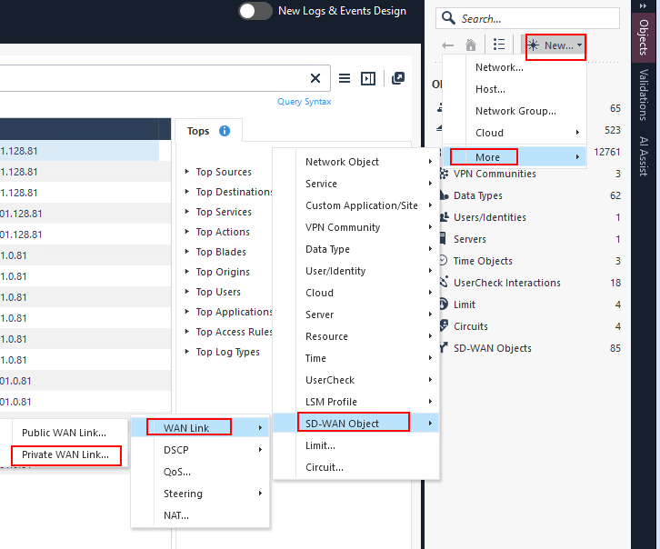
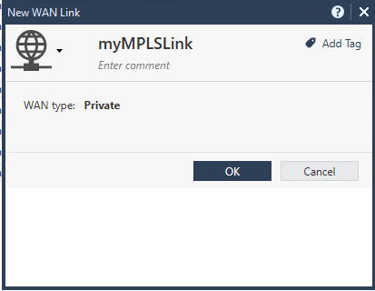
7.2 Move eth3 to the MPLS WAN Link
eth3 to the MPLS WAN LinkOn hq-exl
- Open the gateway object and go to Network Management
- Edit
eth3and open its SD-WAN tab - Map the interface to WAN Link
MPLS - Go to the interface's Network Access and assign the interface to
private circuit
On branch-gw
- Open the gateway object and go to Network Management
- Edit
eth3and open its SD-WAN tab - Map the interface to WAN Link
MPLS - Go to the interface's Network Access and assign the interface to
private circuit
Publish and Install Policy on both gateways.
7.3 Observe
- In CPView on either gateway, open Advanced > SDWAN > Probing-IPv4 > Overlay Probing Results
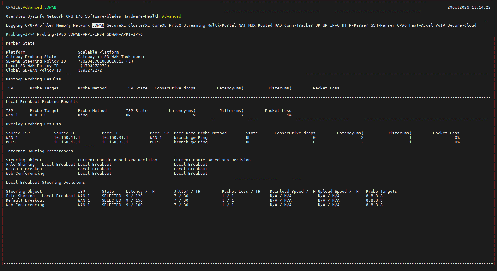
- Run
sdwan show --ispsand compare the circuits ofeth3andeth2 - On hq-client, test the Internet site and
http://bbc.comagain - On hq-client, test the Internet site and
http://172.30.1.60again - On Branch1-client, test the Internet site and
http://bbc.com - On Branch1-client, test the Internet site and
http://192.168.30.40
All connections should work and generate logs. Overlay Probing Results now shows 2 tunnels instead of 4.
- In SmartConsole, open the Encrypt log for the web server and note which interface carried it
Part 8Fail over
15 min
Open the VYOS1 VM and shut down the interface:
configure
set interface ethernet eth1 disable
commit- What can you observe in CPView on hq-exl?
- Check the current status in CPView on branch-gw and note the status of the tunnels.
- On hq-client, reload
http://bbc.comandhttp://172.30.1.60a few times - In SmartConsole, open the latest log for
dst:bbc.comanddst:172.30.1.60
The traffic now uses the private MPLS connection. The VPN peer is the branch-gw eth3 address 10.160.32.1.
- On branch-gw, open CPView and look at Overlay Probing Results
The tunnel over the public link shows DOWN.
- On hq-exl, run
show routeand note which default route is active
User traffic failed over because of the SD-WAN Policy. The gateway's own traffic failed over because of the Gaia route with ping on. You need both.
Go back to VYOS1 and enable the interface again:
delete interface ethernet eth1 disable
commit- Confirm the public tunnel returns to UP in CPView
Exercise: check VPN peer status
- On hq-exl, in Expert mode, list all tunnels:
vpn tu tlist- Check one probing connection (replace the addresses with your interface addresses):
vpn tu conn <local-interface-ip> - <peer-interface-ip> - 1The minus sign is a wildcard. A healthy connection shows Encrypted, plus From: and To: fields and a valid Out SPI.
If you need more
- Policy install problems:
sdwan install -d $FWDIR/state/__tmp/SDWAN/, then read$FWDIR/log/sdwan.elgand$FWDIR/log/sdwan_steering.elg - Missing peer in CPView: check interface names in all three places, community membership, and that both gateways run the same management method
Optional challenges
Check that Threat Prevention still sees overlay traffic
- Open the console of the test host (Hacker and JMeter in the topology diagram)
- Start an automated web scan against
http://172.30.1.60 - In SmartConsole, search for
dst:172.30.1.60 AND blade:IPS
IPS logs appear. SD-WAN steers the traffic. It doesn't skip inspection.
Cheat sheet
| Task | Command |
|---|---|
| SD-WAN status (Clish) | show sdwan status |
| SD-WAN interfaces and circuits | show sdwan isps or sdwan show --isps |
| SD-WAN peers | show sdwan peers or sdwan show --peers |
| Installed SD-WAN Policy date | fw sdwan stat |
| Probing results | cpview > Advanced > SDWAN > Probing-IPv4 |
| VPN tunnels | vpn tu tlist |
| One connection's tunnel | vpn tu conn <src> <sport> <dst> <dport> <proto> |
| Packet path | fw monitor -F "<src>,0,<dst>,0,0" -F "<dst>,0,<src>,0,0" |
| Drops | fw ctl zdebug + drop |
| Steering log | $FWDIR/log/sdwan_steering.elg |